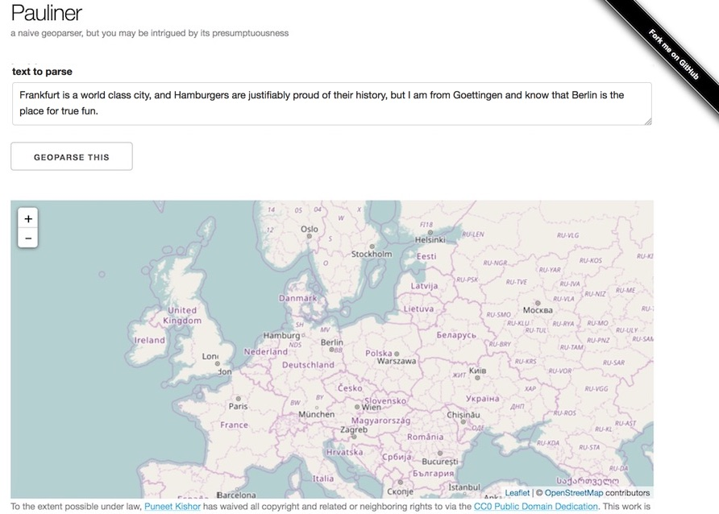
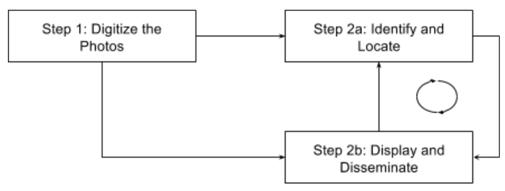
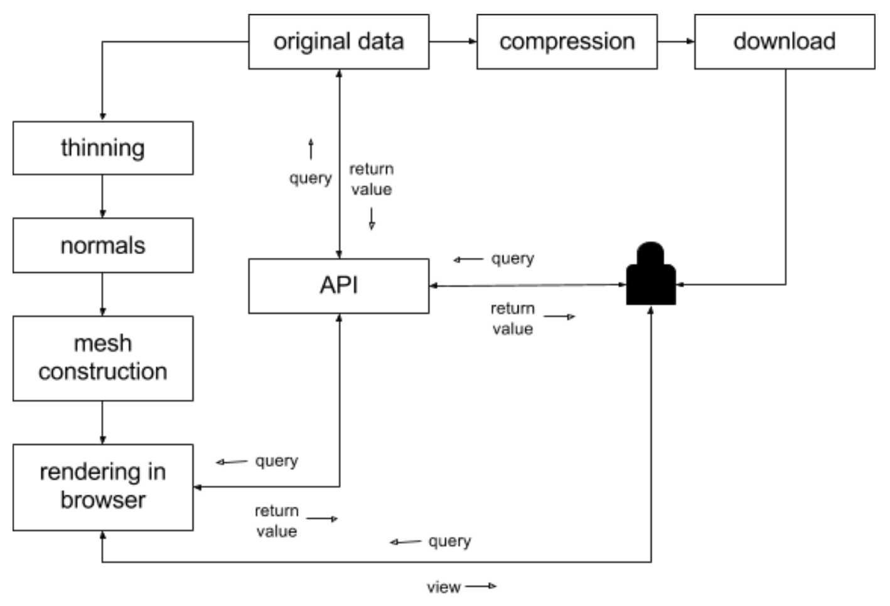
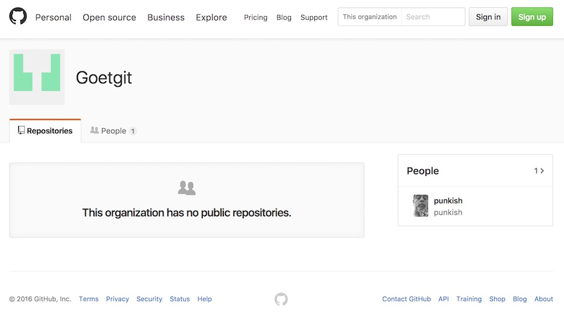

name: intro class: center, middle # Geottingen ## University of Göttingen • October 2016 Puneet Kishor (Plazi) Released under a [CC0 Public Domain Dedication](https://creativecommons.org/publicdomain/zero/1.0/). <div class="slidefooter"> <a href="/Geottingen"><img src="/_lib/img/PunkishEidesisOrg-small.gif"></a> <a rel="license" href="https://creativecommons.org/publicdomain/zero/1.0/"><img src="/_lib/img/zero.png" alt="CC0" width="30" height="30"></a> <div class="navlinks"> <a href="javascript:slideshow.gotoPreviousSlide()">prev</a> <a href="javascript:slideshow.gotoNextSlide()">next</a> </div> </div> --- layout: true <div class="slidefooter"> <a href="/Geottingen"><img src="/_lib/img/PunkishEidesisOrg-small.gif"></a> <a rel="license" href="https://creativecommons.org/publicdomain/zero/1.0/"><img src="/_lib/img/zero.png" alt="CC0" width="30" height="30"></a> <div class="navlinks"> <a href="javascript:slideshow.gotoPreviousSlide()">prev</a> <a href="javascript:slideshow.gotoNextSlide()">next</a> </div> </div> --- ## Help * Notes are hidden, but may be seen by pressing **P** on your keyboard. * Press **C** to clone a show. * Press **H** for other keyboard shortcuts. ??? notes here --- ## Geoparsing .byline[finding location (and optionally, time) in text] ## Applications in text and data mining in both science and digital humanities --- ## Geoparsing .byline[skunkworks project]  --- ## Geoparsing .byline[example] Frankfurt is a world class city, and Hamburgers are justifiably proud of their history, but I am from Goettingen and know that Berlin is the place for true fun --- ## Geoparsing .byline[example] <span class="hilite">Frankfurt</span> is a world class city, and <span class="hilite">Hamburgers</span> are justifiably proud of their history, but I am from <span class="hilite">Goettingen</span> and know that <span class="hilite">Berlin</span> is the place for true fun. #### tokenize-stemmer ```javascript [ 'frankfurt', 'world', 'class', 'citi', 'hamburg', 'justifi', 'proud', 'histori', 'goettingen', 'know', 'berlin', 'place', 'true', 'fun' ] +4ms ``` -- #### POS tagger ```javascript [ [ 'frankfurt', 'N' ], [ 'world', 'NN' ], [ 'class', 'NN' ], [ 'citi', 'N' ], [ 'hamburg', 'N' ], [ 'justifi', 'N' ], [ 'proud', 'JJ' ], [ 'histori', 'N' ], [ 'goettingen', 'N' ], [ 'know', 'VB' ], [ 'berlin', 'N' ], [ 'place', 'NN' ], [ 'true', 'JJ' ], [ 'fun', 'NN' ] ] +3ms ``` -- #### Nouns ```javascript [ 'frankfurt', 'citi', 'hamburg', 'justifi', 'histori', 'goettingen', 'berlin' ] +2ms ``` --- ## Geoparsing .byline[example] <span class="hilite">Frankfurt</span> is a world class city, and <span class="hilite">Hamburgers</span> are justifiably proud of their history, but I am from <span class="hilite">Goettingen</span> and know that <span class="hilite">Berlin</span> is the place for true fun. #### match gazetteer ```javascript [ { name: 'Frankfurt', latitude: 49.68333, longitude: 10.53333 }, { name: 'Hamburg', latitude: 53.57532, longitude: 10.01534 }, { name: 'Göttingen', latitude: 51.66768, longitude: 8.23088 }, { name: 'Berlin', latitude: 54.03573, longitude: 10.44987 } ] ``` --- ## Geotagging .byline[adding time and space to analog photos] **Digital Manaslu:** SUB has received a unique collection of analog photos (prints and slides) from various expeditions to Nepal undertaken over a period of time—a legacy of Professor Matthias Kuhle. --  -- **crowdsourcing:** Scribe, Zooniverse, Google Earth Engine, Amazon Earth **deep learning:** OpenCV, neural networks --- ## 3D Modeling and Visualization .byline[giving shape to the world] - Space-time visualization - Millions of points (PointClouds) - Meshlab - PCL - Online in-browser visualization - Babylonjs - Threejs - API-based data query - Archived data dissemination --- ## 3D Modeling and Visualization .byline[giving shape to the world]  --- ## Open Science .byline[the three pillars of open science] .three-left-column[ #### Open Access Peer-reviewed journals and conference proceedings as well as non-peer-reviewed output such as popular articles, books, slideshows and videos ] .three-mid-column[ #### Open Source Software used in the analysis and visualization of data ] .three-right-column[ #### Open Data Data are the fuel of science ] --- ## Open Science .byline[“If you ain't got Git then you should .hilite[Goetgit]”] .three-left-column[] .three-mid-column[ #### Open Source ] .three-right-column[] 